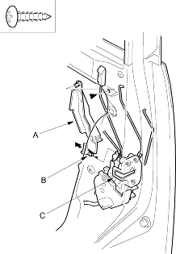
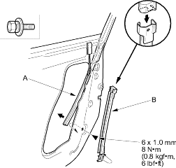
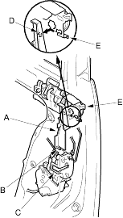

- Raise the glass fully.
- Remove these items:
- If equipped, remove the screw, pull out the lock rod protector (A) to release the hook (B) from the latch (C), then remove it.
| Fastener Location |
 : Screw, 1 : Screw, 1 |

- Pull the glass run channel (A) away as necessary and remove the bolts, then remove the centre lower channel (B) by pulling it downward.
| Fastener Location |
| : Bolt, 1 |

- If equipped, pull out the bottom of the cylinder rod protector (A) to release the hook (B) from the latch (C) and release the upper hook (D) from the outer handle protector (E), then remove the protector.
